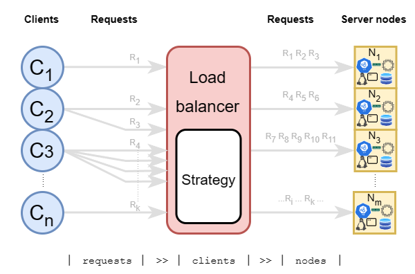

A Few Load Balancing Algorithms
Abstract
We have an architecture where there are numerous server nodes running and we have to balance the load from the clients.

We will go quickly through some of the strategies and check their strengths and weaknesses.
We will see that static strategies are easier on the load balancer hardware and may be cheaper, but dynamic strategies will be much better in distributing the load.
We will also speak about the weighted and sticky versions of these algorithms and will see where they can be useful.
Definitions
Sticky strategy
When a strategy is sticky, then it will initially choose a node per client and the stick to that node until the end of the session.
This is needed when session-wide data is not synced to other nodes.
Weighted strategy
When - for any reason like lower-end hardware, new node still syncing/booting, etc. - we want to spare a node from full pressure we can set node weights accordingly. Most of the strategies have weighted versions were we can set if a node is expected to handle more than the others. Weights may be set statically or dynamically.
All non-weighted strategies can be viewed as weighted strategies where the weights are set to the same number.
Static strategies
Strategies in this category have a preset configuration and these won't reflect the changes in the infrastructure, like a struggling node. They are easy on the load balancer hardware because they don't need any complex calculations and querying the metrics of the nodes, therefore usually a cheaper solution but may not be the best option.
Dynamic strategies
Strategies in this category are usually based on metrics coming from the nodes. Therefore they are adapting and expected to secure a better availability, but it may have a higher cost (monitoring on nodes + more calculation needed).
The strategies discussed
- Random strategy (static)
- Round Robin Family (static)
- Hashing (static)
- URL based (static)
- Metric based (dynamic)
Random strategy (static)
Chooses a node randomly (according to weights) at every request (non-sticky) / client (sticky).
Pros:
- No monitoring needed
Cons:
- Static strategy
Round Robin (static)
For every request (non-sticky) / client (sticky) it will "go around" the nodes and select them for traffic. It works with weights too.
Pros:
- No monitoring needed
Cons:
- Static strategy
- Not stateless
(IP, URL, etc.) Hashing strategy (static)
Node is selected based on hashing some information coming from the client. If it is an IP address, then this strategy can be automatically sticky given the IP address doesn't change meanwhile (VPN turned on/off, new IP assigned by ISP).
If the hashing is based on other information, like the called URL, then it may distribute according to the hash function. To make it sticky the selection has to happen at the first call.
Pros:
- No monitoring needed
Cons:
- Need a good hash function
- Static strategy
- URL hashing may be problematic. (Imagine everyone hitting on the same URL.)
URL based
Load balancer will forward every request according to a mapping. For example for /shopping it will forward every request to node 2, /cart will be forwarded to node 3, etc.
Pros:
- No monitoring
Cons:
- Not really solving the load balancing issue (what if everyone is taking a look at
/shopping)
Least Connections / Least Response Time / Other metric based (dynamic)
Node is selected based on number of connections, average response time or other metrics we can monitor (CPU, RAM, Disk utilization) and calculate. Stickiness can be achieved here too by deciding at the first request.
Pros:
- Dynamic strategy
Cons:
- Needs monitoring
- Separate metric calculations may be needed
- More expensive
Combinations of strategies
These strategies can be combined when needed, like Least Connections + Random, where if we see that there are several nodes with the same number of minimum connections, then we choose randomly. The only limit is our imagination.
Cheat sheet
- No monitoring? Choose a static strategy!
- Have monitoring? Choose a dynamic strategy!
- (Short lived) data not synced? Make strategy sticky!
- Nodes aren't uniform? Make strategy weighted!
You can combine. Some examples:
- No monitoring and nodes aren't uniform? Use weighted static strategy!
- Have monitoring and nodes are going up and down? Use weighted dynamic strategy!
- Logged in user is adding items to a cart which is not synced? Use an IP address/session/user-based strategy
- Logged in user is adding items to a cart which is not synced, nodes have monitoring and may have different states/availability? Use an IP address/session/user-based sticky dynamic strategy
It is not that simple, but these can be a good start when deciding.